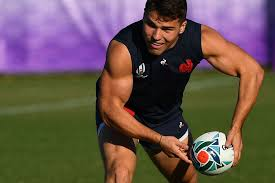

Antoine Dupont is a French professional rugby union player who plays as a scrum-half for Toulouse in the Top 14 and the French national team. Born on November 15, 1996, in Lannemezan, France, Dupont has quickly risen to prominence in the rugby world due to his exceptional skills, agility, and game intelligence. He began his professional career with Castres Olympique before moving to Toulouse in 2019. Since then, he has been a key player for both his club and country. Dupont is known for his quick decision-making, accurate passing, and ability to break through defensive lines. He has received numerous accolades for his performances, including being named the Six Nations Player of the Championship in 2020. As of 2024, Antoine Dupont is widely regarded as one of the best scrum-halves in the world and continues to be a vital asset for French rugby.
